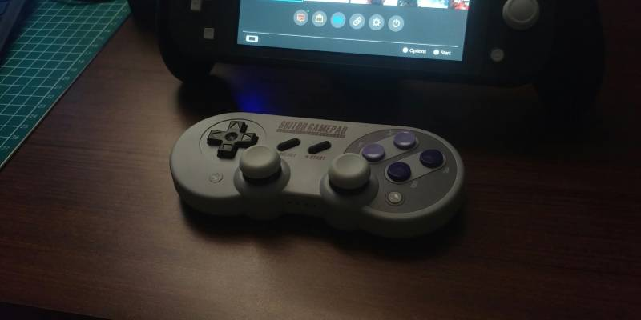
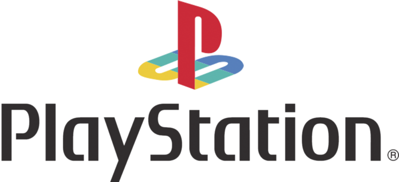
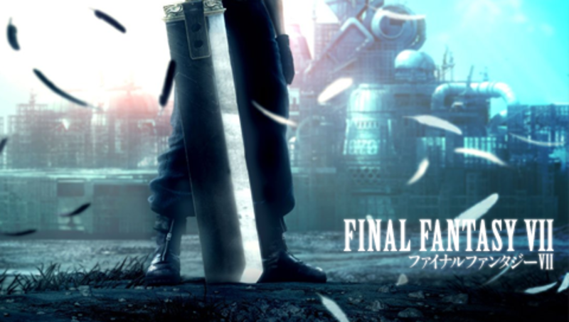
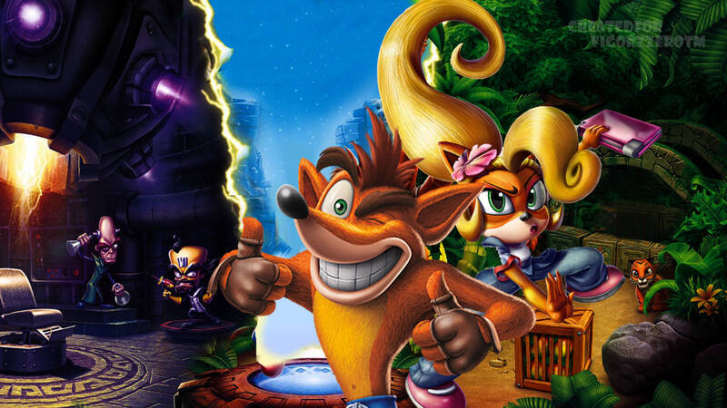
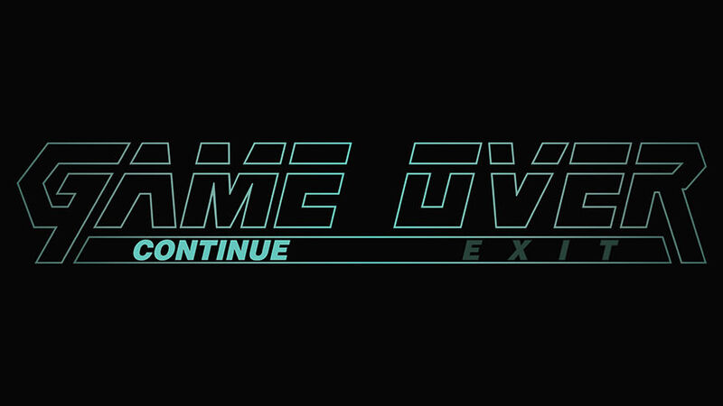
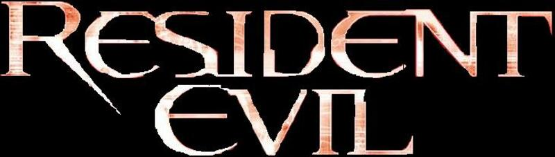
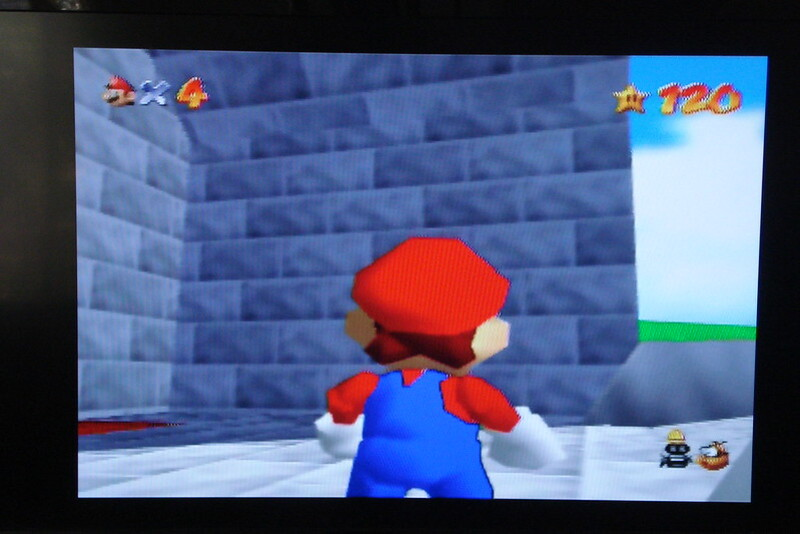
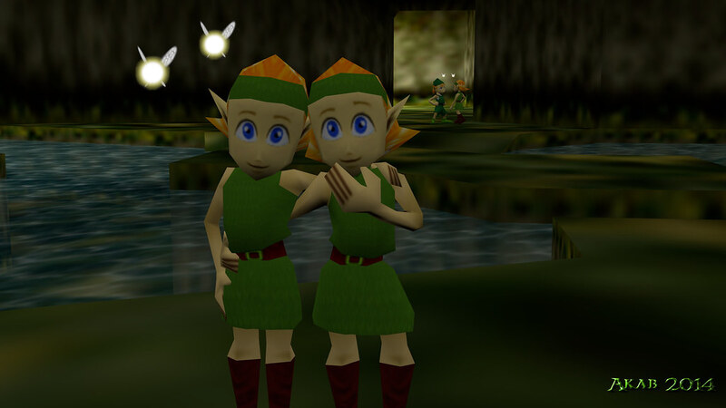
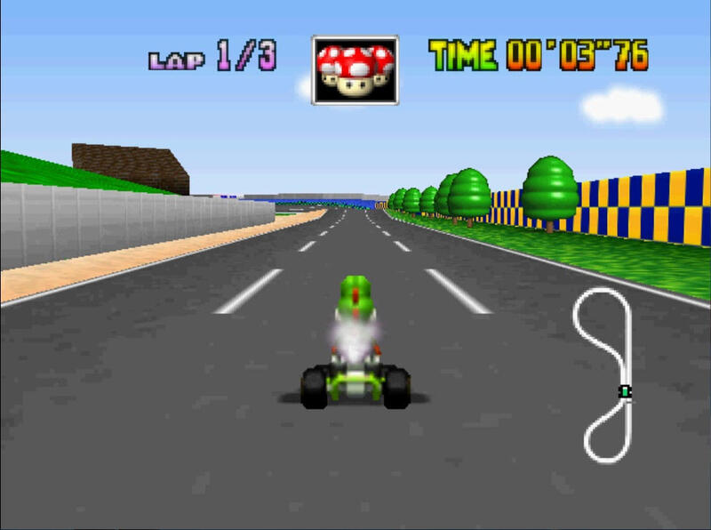
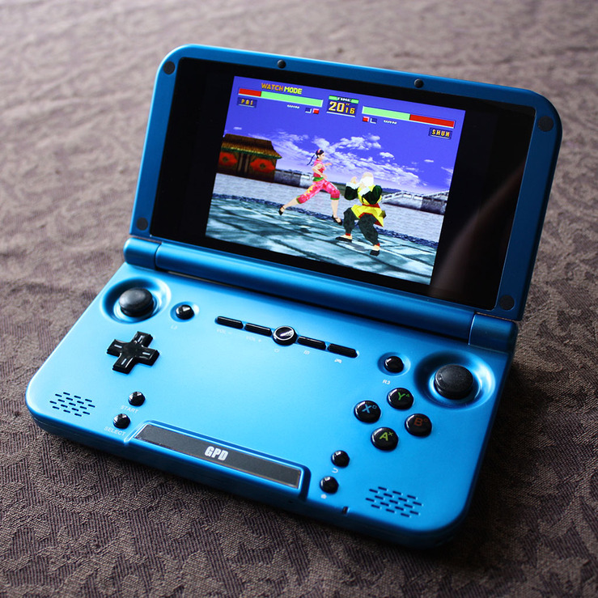

Confira minhas redes sociais:



A quinta geração dos consoles de videogame marcou um dos períodos mais transformadores da história da indústria. Iniciada oficialmente em 1993 e consolidada entre 1994 e 1996, essa geração ficou conhecida como a era dos 32/64 bits, período em que os gráficos tridimensionais (3D) deixaram de ser experimentais e passaram a definir o futuro dos jogos eletrônicos.
Após o domínio da quarta geração — liderada por Nintendo e Sega com seus consoles de 16 bits — a indústria enfrentava um novo desafio: como evoluir tecnologicamente e, ao mesmo tempo, ampliar o público consumidor. A resposta veio com hardware mais poderoso, uso de CDs e uma abordagem mais cinematográfica nos jogos. Os principais consoles da geração foram:
Também participaram desse período o 3DO Interactive Multiplayer e o Atari Jaguar, embora com menor impacto comercial.

Créditos de imagem:Gameposo
No final dos anos 1980, a Sony não era uma empresa de videogames. Ela era reconhecida mundialmente por seus aparelhos de som, televisores e pelo Walkman. Porém, havia um engenheiro dentro da empresa que via potencial nos jogos: Ken Kutaragi. Kutaragi foi responsável por desenvolver o chip de áudio do Super Nintendo Entertainment System, da Nintendo. Esse trabalho aproximou as duas empresas e abriu caminho para uma parceria maior.
No início dos anos 1990, Sony e Nintendo começaram a trabalhar juntas em um acessório de CD-ROM para o Super Nintendo. O projeto era conhecido como “Play Station” — ainda com espaço entre as palavras. A ideia era criar um console híbrido que A Decisão de Enfrentar a Nintendo O então presidente da Sony, Norio Ohga, apoiou Kutaragi. Segundo relatos da época, Ohga acreditava que a Sony precisava provar sua força tecnológica. Foi criada a divisão Sony Computer Entertainment em 1993, dando início oficialmente ao desenvolvimento do console que se tornaria o PlayStation. Kutaragi defendia que o console fosse:
Para a Nintendo, o CD representava mais espaço e trilhas sonoras de melhor qualidade. Para a Sony, era a entrada definitiva no mercado de jogos. Mas havia um problema: o contrato dava à Sony grande controle sobre os lucros dos jogos em CD.
Durante a CES (Consumer Electronics Show) de 1991, a Sony anunciou oficialmente sua parceria com a Nintendo. Porém, no dia seguinte, a Nintendo surpreendeu o mundo ao anunciar uma nova parceria — dessa vez com a Philips — praticamente rompendo publicamente com a Sony. O episódio foi visto como uma humilhação corporativa. Anos depois, Ken Kutaragi descreveu aquele momento como decisivo. Ele convenceu a liderança da Sony de que, em vez de abandonar o projeto, a empresa deveria criar seu próprio console.
O PlayStation foi lançado no Japão em dezembro de 1994. Sua estratégia era diferente da Nintendo: Público mais jovem-adulto Marketing mais agressivo e moderno Apoio massivo a desenvolvedoras terceiras A Sega lançou o Sega Saturn quase ao mesmo tempo, mas sua arquitetura complexa dificultava o desenvolvimento de jogos 3D. Já o PlayStation apostava em ferramentas acessíveis e forte suporte às third-parties. Isso atraiu empresas como a Square, que levou a franquia Final Fantasy VII para a Sony — decisão que mudou o equilíbrio do mercado.
A principal revolução da quinta geração foi o salto definitivo para ambientes tridimensionais. Jogos deixaram de ser majoritariamente em 2D e passaram a explorar mundos abertos, câmeras dinâmicas e personagens poligonais.
O PlayStation e o Sega Saturn adotaram o CD como mídia principal. Isso permitiu: Mais espaço para trilhas sonoras completas Vídeos em alta qualidade (para a época) Jogos maiores e mais ambiciosos A Nintendo, por outro lado, optou por cartuchos no Nintendo 64, garantindo menor tempo de carregamento, mas limitando o espaço de armazenamento.
O controle do Nintendo 64 introduziu o analógico como padrão para jogos 3D, influenciando toda a indústria.
O PlayStation redefiniu o mercado com títulos que ampliaram o público e consolidaram franquias históricas:




O Nintendo 64 apostou na inovação em design de gameplay:




Confira minhas redes sociais: